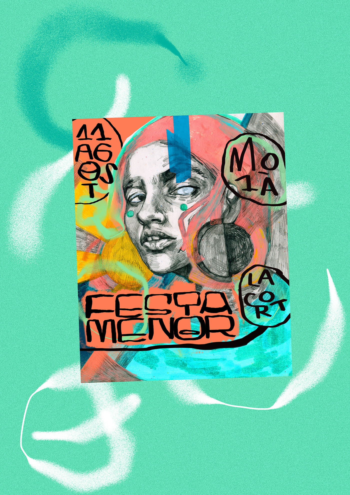

Carla Fuentes "El lápiz que ilustra una generación"
Museo Gugenhein, Bilbao. 1/01/2020 - 19/03/2020

Leentrelineas. "Una fotografía más humana"
MACBA, Barcelona. 07/03/2020 - 19/05/2020
Susana Blasco. "Necesitamos desconectar del ordenador y hacer cosas con las manos"
Museo Sorolla, Madrid. 13/06/2020 - 28/07/2020

